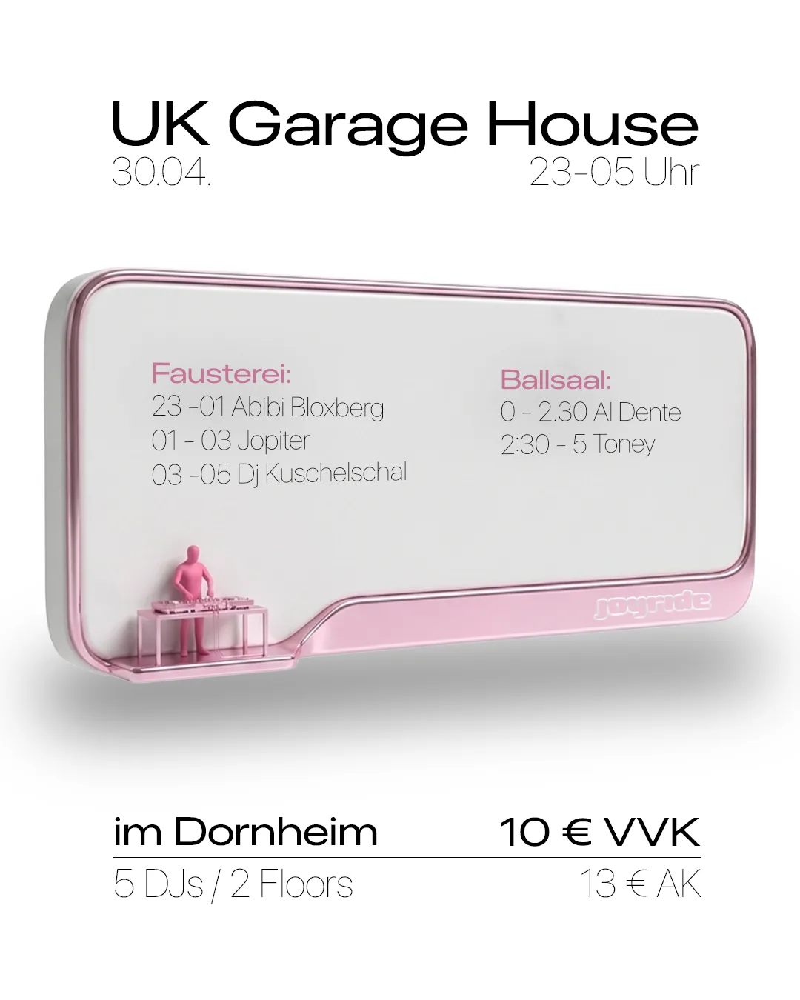
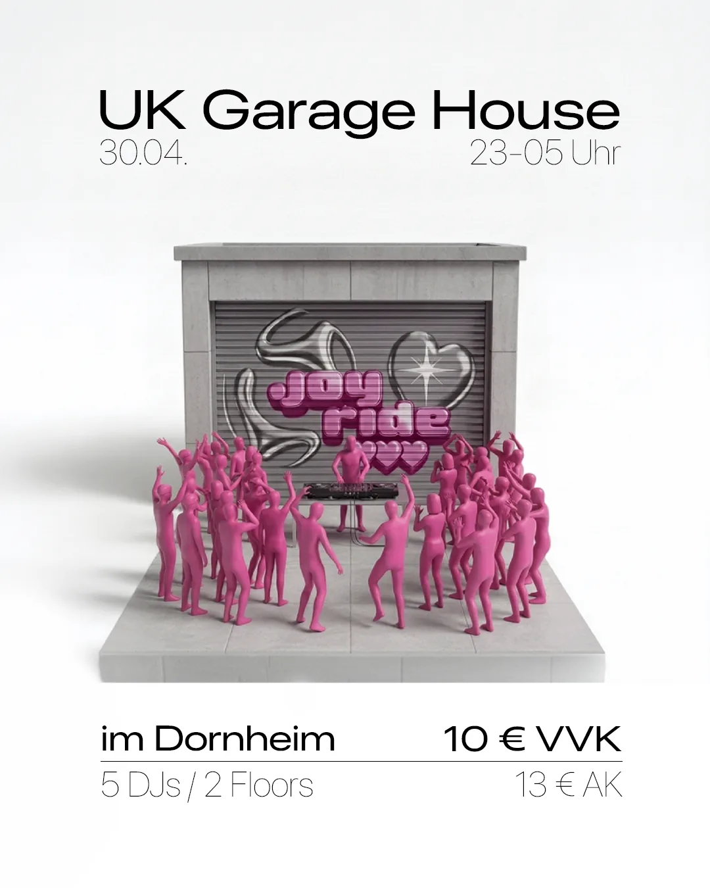
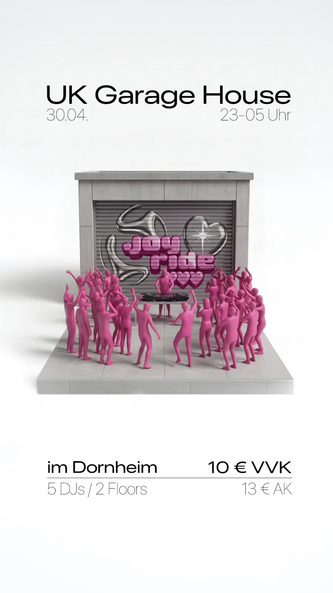
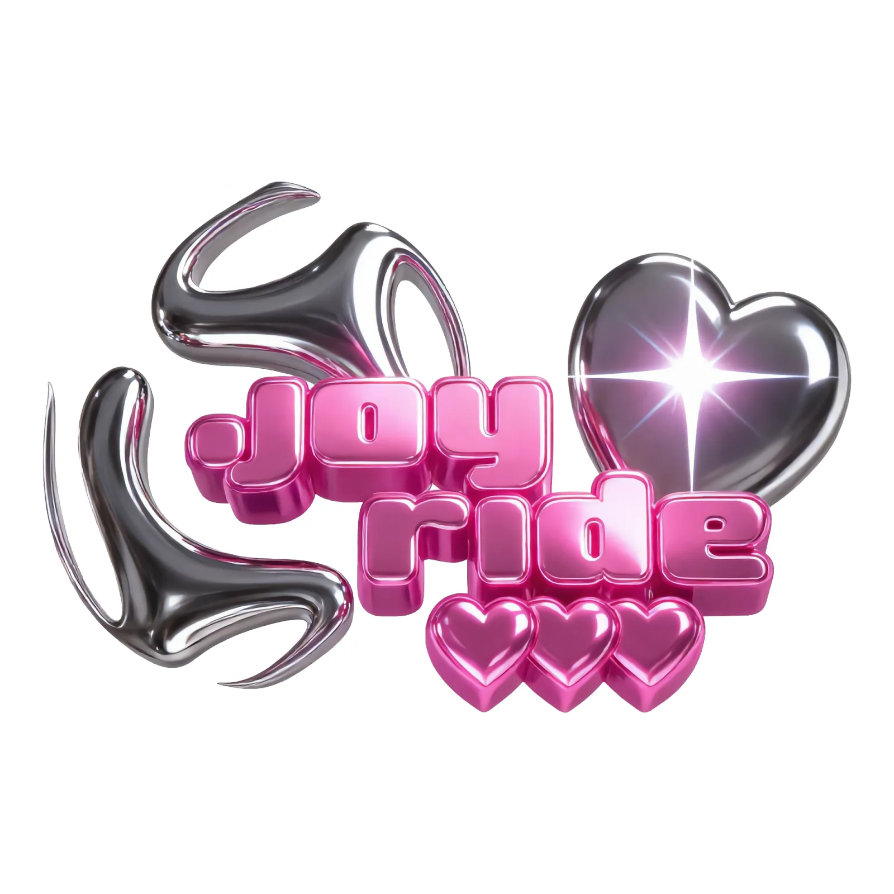
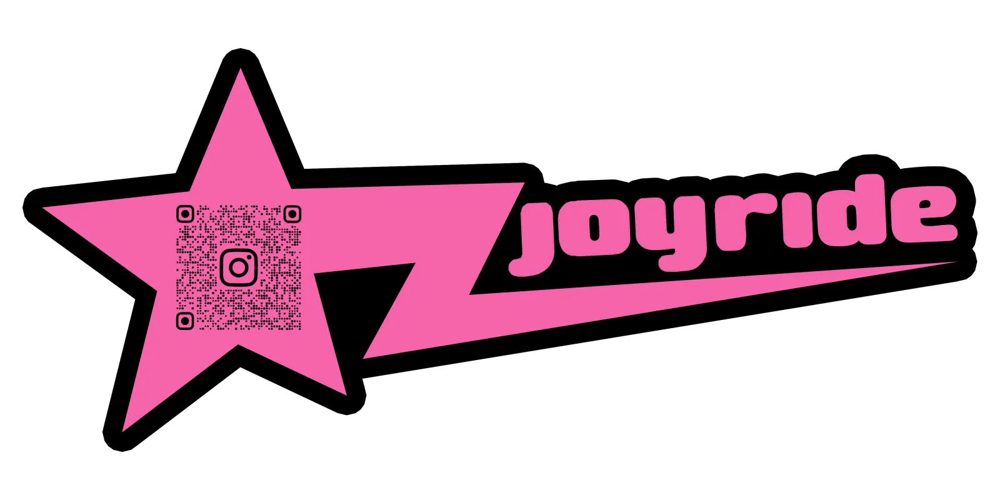

Joyride 2 — Event-Design & Sticker
Design für die zweite Joyride-Ausgabe: Hauptmotiv, Lineup-Post, Story sowie Sticker — davon einer mit QR-Code zur Veranstaltung.





Ähnliches Projekt geplant? Anfrage schreiben oder Leistungen ansehen.